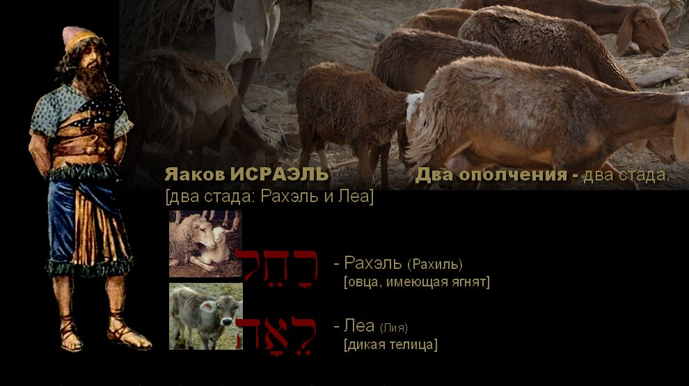

Shulamit. The Dance of Two Camps (Song of Songs 7:1)
"Shulamit. The Dance of Two Camps" is a theme about two branches of one tree, about two sisters, daughters of one Father, about the two communities that make up the people of God: Israel and the Church. A special, mysterious refraction of the theme of the relationship between the sisters opens before us at the end of chapter 6 of the Song of Songs (Song 6:13).
Shulamit. The dance of two camps (Song 6:13)
A revelation hidden under the layers of translations.
Only in the original Hebrew text do the depths of the Most High's purposes, encoded in the meanings of the names and words of the Song of Songs, begin to open up.

If this theme interests you, I also recommend the related art midrash "Two OLIVE TREES. Two ALLEGORIES" (Israel and the Church, 2013, in Russian).
Author: Ephraim Kalish / Torah-Art
 Israel and the Church: Two Halves of One Heart
Israel and the Church: Two Halves of One Heart Turn Us, and We Shall Be Turned!
Turn Us, and We Shall Be Turned! The Two Shall Be One. Israel and the Church
The Two Shall Be One. Israel and the Church